library(multinma)
options(mc.cores = parallel::detectCores())#> For execution on a local, multicore CPU with excess RAM we recommend calling
#> options(mc.cores = parallel::detectCores())
#>
#> Attaching package: 'multinma'
#> The following objects are masked from 'package:stats':
#>
#> dgamma, pgamma, qgammaThis vignette describes the analysis of data on the mean off-time
reduction in patients given dopamine agonists as adjunct therapy in
Parkinson’s disease, in a network of 7 trials of 4 active drugs plus
placebo (Dias et al. 2011). The data are
available in this package as parkinsons:
head(parkinsons)
#> studyn trtn y se n diff se_diff
#> 1 1 1 -1.22 0.504 54 NA 0.504
#> 2 1 3 -1.53 0.439 95 -0.31 0.668
#> 3 2 1 -0.70 0.282 172 NA 0.282
#> 4 2 2 -2.40 0.258 173 -1.70 0.382
#> 5 3 1 -0.30 0.505 76 NA 0.505
#> 6 3 2 -2.60 0.510 71 -2.30 0.718We consider analysing these data in three separate ways:
- Using arm-based data (means
yand corresponding standard errorsse); - Using contrast-based data (mean differences
diffand corresponding standard errorsse_diff); - A combination of the two, where some studies contribute arm-based data, and other contribute contrast-based data.
Note: In this case, with Normal likelihoods for both arms and contrasts, we will see that the three analyses give identical results. In general, unless the arm-based likelihood is Normal, results from a model using a contrast-based likelihood will not exactly match those from a model using an arm-based likelihood, since the contrast-based Normal likelihood is only an approximation. Similarity of results depends on the suitability of the Normal approximation, which may not always be appropriate - e.g. with a small number of events or small sample size for a binary outcome. The use of an arm-based likelihood (sometimes called an “exact” likelihood) is therefore preferable where possible in general.
Analysis of arm-based data
We begin with an analysis of the arm-based data - means and standard errors.
Setting up the network
We have arm-level continuous data giving the mean off-time reduction
(y) and standard error (se) in each arm. We
use the function set_agd_arm() to set up the network.
arm_net <- set_agd_arm(parkinsons,
study = studyn,
trt = trtn,
y = y,
se = se,
sample_size = n)
arm_net
#> A network with 7 AgD studies (arm-based).
#>
#> ------------------------------------------------------- AgD studies (arm-based) ----
#> Study Treatment arms
#> 1 2: 1 | 3
#> 2 2: 1 | 2
#> 3 3: 4 | 1 | 2
#> 4 2: 4 | 3
#> 5 2: 4 | 3
#> 6 2: 4 | 5
#> 7 2: 4 | 5
#>
#> Outcome type: continuous
#> ------------------------------------------------------------------------------------
#> Total number of treatments: 5
#> Total number of studies: 7
#> Reference treatment is: 4
#> Network is connectedWe let treatment 4 be set by default as the network reference
treatment, since this results in considerably improved sampling
efficiency over choosing treatment 1 as the network reference. The
sample_size argument is optional, but enables the nodes to
be weighted by sample size in the network plot.
Plot the network structure.
plot(arm_net, weight_edges = TRUE, weight_nodes = TRUE)
Meta-analysis models
We fit both fixed effect (FE) and random effects (RE) models.
Fixed effect meta-analysis
First, we fit a fixed effect model using the nma()
function with trt_effects = "fixed". We use \(\mathrm{N}(0, 100^2)\) prior distributions
for the treatment effects \(d_k\) and
study-specific intercepts \(\mu_j\). We
can examine the range of parameter values implied by these prior
distributions with the summary() method:
summary(normal(scale = 100))
#> A Normal prior distribution: location = 0, scale = 100.
#> 50% of the prior density lies between -67.45 and 67.45.
#> 95% of the prior density lies between -196 and 196.The model is fitted using the nma() function.
arm_fit_FE <- nma(arm_net,
trt_effects = "fixed",
prior_intercept = normal(scale = 100),
prior_trt = normal(scale = 10))
#> Note: Setting "4" as the network reference treatment.Basic parameter summaries are given by the print()
method:
arm_fit_FE
#> A fixed effects NMA with a normal likelihood (identity link).
#> Inference for Stan model: normal.
#> 4 chains, each with iter=2000; warmup=1000; thin=1;
#> post-warmup draws per chain=1000, total post-warmup draws=4000.
#>
#> mean se_mean sd 2.5% 25% 50% 75% 97.5% n_eff Rhat
#> d[1] 0.54 0.01 0.48 -0.40 0.21 0.54 0.86 1.50 1400 1
#> d[2] -1.28 0.01 0.53 -2.28 -1.65 -1.27 -0.92 -0.25 1525 1
#> d[3] 0.05 0.01 0.33 -0.61 -0.17 0.05 0.28 0.69 1930 1
#> d[5] -0.30 0.00 0.21 -0.73 -0.44 -0.30 -0.16 0.09 2683 1
#> lp__ -6.73 0.06 2.43 -12.38 -8.12 -6.36 -4.98 -3.12 1570 1
#>
#> Samples were drawn using NUTS(diag_e) at Wed Aug 30 11:01:52 2023.
#> For each parameter, n_eff is a crude measure of effective sample size,
#> and Rhat is the potential scale reduction factor on split chains (at
#> convergence, Rhat=1).By default, summaries of the study-specific intercepts \(\mu_j\) are hidden, but could be examined
by changing the pars argument:
The prior and posterior distributions can be compared visually using
the plot_prior_posterior() function:
plot_prior_posterior(arm_fit_FE)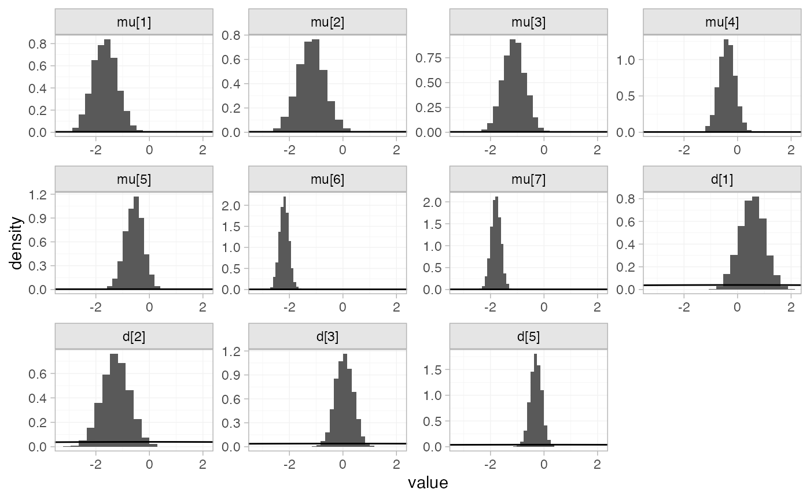
Random effects meta-analysis
We now fit a random effects model using the nma()
function with trt_effects = "random". Again, we use \(\mathrm{N}(0, 100^2)\) prior distributions
for the treatment effects \(d_k\) and
study-specific intercepts \(\mu_j\),
and we additionally use a \(\textrm{half-N}(5^2)\) prior for the
heterogeneity standard deviation \(\tau\). We can examine the range of
parameter values implied by these prior distributions with the
summary() method:
summary(normal(scale = 100))
#> A Normal prior distribution: location = 0, scale = 100.
#> 50% of the prior density lies between -67.45 and 67.45.
#> 95% of the prior density lies between -196 and 196.
summary(half_normal(scale = 5))
#> A half-Normal prior distribution: location = 0, scale = 5.
#> 50% of the prior density lies between 0 and 3.37.
#> 95% of the prior density lies between 0 and 9.8.Fitting the RE model
arm_fit_RE <- nma(arm_net,
seed = 379394727,
trt_effects = "random",
prior_intercept = normal(scale = 100),
prior_trt = normal(scale = 100),
prior_het = half_normal(scale = 5),
adapt_delta = 0.99)
#> Note: Setting "4" as the network reference treatment.
#> Warning: There were 3 divergent transitions after warmup. See
#> https://mc-stan.org/misc/warnings.html#divergent-transitions-after-warmup
#> to find out why this is a problem and how to eliminate them.
#> Warning: Examine the pairs() plot to diagnose sampling problemsWe do see a small number of divergent transition errors, which cannot
simply be removed by increasing the value of the
adapt_delta argument (by default set to 0.95
for RE models). To diagnose, we use the pairs() method to
investigate where in the posterior distribution these divergences are
happening (indicated by red crosses):
The divergent transitions occur in the upper tail of the heterogeneity standard deviation. In this case, with only a small number of studies, there is not very much information to estimate the heterogeneity standard deviation and the prior distribution may be too heavy-tailed. We could consider a more informative prior distribution for the heterogeneity variance to aid estimation.
Basic parameter summaries are given by the print()
method:
arm_fit_RE
#> A random effects NMA with a normal likelihood (identity link).
#> Inference for Stan model: normal.
#> 4 chains, each with iter=2000; warmup=1000; thin=1;
#> post-warmup draws per chain=1000, total post-warmup draws=4000.
#>
#> mean se_mean sd 2.5% 25% 50% 75% 97.5% n_eff Rhat
#> d[1] 0.51 0.02 0.63 -0.67 0.11 0.52 0.91 1.70 1684 1
#> d[2] -1.33 0.02 0.69 -2.72 -1.75 -1.30 -0.89 -0.07 1690 1
#> d[3] 0.02 0.01 0.45 -0.89 -0.25 0.03 0.28 0.88 2148 1
#> d[5] -0.30 0.01 0.44 -1.21 -0.50 -0.29 -0.09 0.56 1346 1
#> lp__ -12.81 0.10 3.59 -20.80 -15.10 -12.52 -10.20 -6.61 1234 1
#> tau 0.38 0.01 0.37 0.01 0.13 0.27 0.51 1.41 877 1
#>
#> Samples were drawn using NUTS(diag_e) at Wed Aug 30 11:02:03 2023.
#> For each parameter, n_eff is a crude measure of effective sample size,
#> and Rhat is the potential scale reduction factor on split chains (at
#> convergence, Rhat=1).By default, summaries of the study-specific intercepts \(\mu_j\) and study-specific relative effects
\(\delta_{jk}\) are hidden, but could
be examined by changing the pars argument:
The prior and posterior distributions can be compared visually using
the plot_prior_posterior() function:
plot_prior_posterior(arm_fit_RE)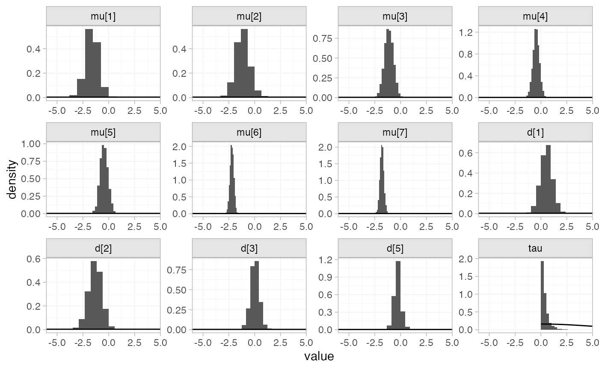
Model comparison
Model fit can be checked using the dic() function:
(arm_dic_FE <- dic(arm_fit_FE))
#> Residual deviance: 13.4 (on 15 data points)
#> pD: 11.1
#> DIC: 24.6
(arm_dic_RE <- dic(arm_fit_RE))
#> Residual deviance: 13.6 (on 15 data points)
#> pD: 12.4
#> DIC: 26.1Both models fit the data well, having posterior mean residual deviance close to the number of data points. The DIC is similar between models, so we choose the FE model based on parsimony.
We can also examine the residual deviance contributions with the
corresponding plot() method.
plot(arm_dic_FE)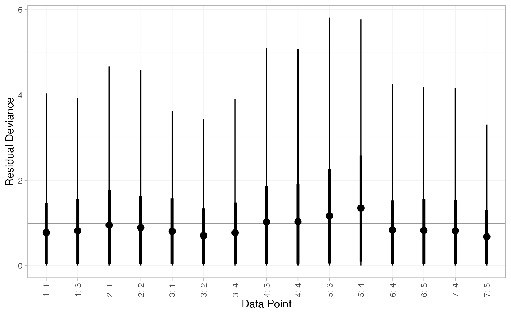
plot(arm_dic_RE)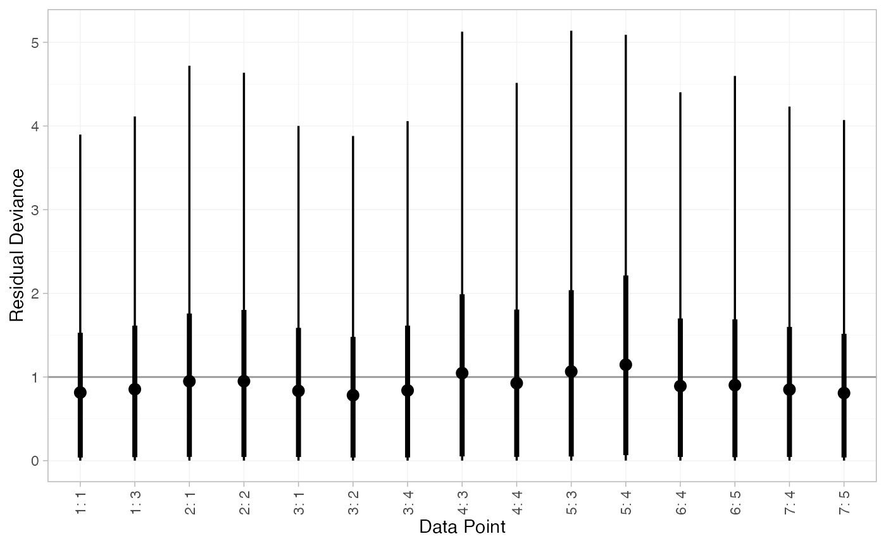
Further results
For comparison with Dias et al. (2011), we can produce
relative effects against placebo using the
relative_effects() function with
trt_ref = 1:
(arm_releff_FE <- relative_effects(arm_fit_FE, trt_ref = 1))
#> mean sd 2.5% 25% 50% 75% 97.5% Bulk_ESS Tail_ESS Rhat
#> d[4] -0.54 0.48 -1.50 -0.86 -0.54 -0.21 0.40 1416 1936 1
#> d[2] -1.82 0.33 -2.48 -2.04 -1.82 -1.60 -1.15 5879 2894 1
#> d[3] -0.49 0.49 -1.44 -0.81 -0.49 -0.17 0.47 2074 2425 1
#> d[5] -0.84 0.53 -1.85 -1.20 -0.85 -0.49 0.18 1574 2462 1
plot(arm_releff_FE, ref_line = 0)
(arm_releff_RE <- relative_effects(arm_fit_RE, trt_ref = 1))
#> mean sd 2.5% 25% 50% 75% 97.5% Bulk_ESS Tail_ESS Rhat
#> d[4] -0.51 0.63 -1.70 -0.91 -0.52 -0.11 0.67 1804 1484 1
#> d[2] -1.84 0.51 -2.86 -2.12 -1.83 -1.54 -0.86 3748 2408 1
#> d[3] -0.49 0.66 -1.80 -0.90 -0.48 -0.08 0.74 2657 1956 1
#> d[5] -0.81 0.78 -2.36 -1.25 -0.82 -0.36 0.66 1737 1588 1
plot(arm_releff_RE, ref_line = 0)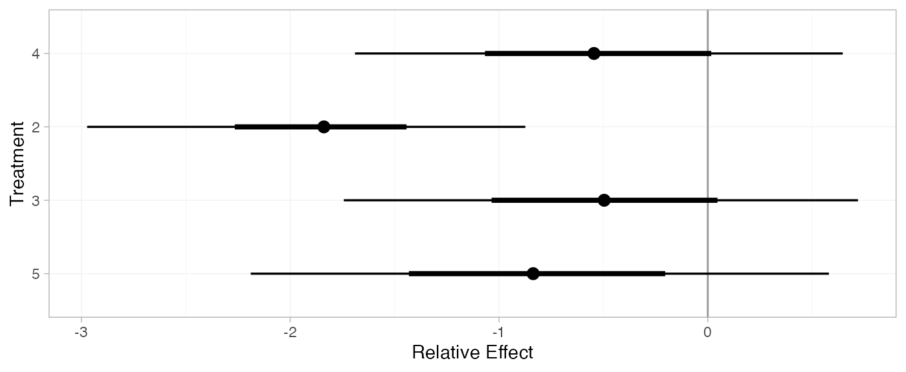
Following Dias et al. (2011), we produce absolute predictions
of the mean off-time reduction on each treatment assuming a Normal
distribution for the outcomes on treatment 1 (placebo) with mean \(-0.73\) and precision \(21\). We use the predict()
method, where the baseline argument takes a
distr() distribution object with which we specify the
corresponding Normal distribution, and we specify
trt_ref = 1 to indicate that the baseline distribution
corresponds to treatment 1. (Strictly speaking,
type = "response" is unnecessary here, since the identity
link function was used.)
arm_pred_FE <- predict(arm_fit_FE,
baseline = distr(qnorm, mean = -0.73, sd = 21^-0.5),
type = "response",
trt_ref = 1)
arm_pred_FE
#> mean sd 2.5% 25% 50% 75% 97.5% Bulk_ESS Tail_ESS Rhat
#> pred[4] -1.27 0.53 -2.33 -1.62 -1.27 -0.91 -0.21 1636 2297 1
#> pred[1] -0.73 0.22 -1.16 -0.88 -0.73 -0.58 -0.29 3910 3936 1
#> pred[2] -2.55 0.40 -3.32 -2.82 -2.54 -2.28 -1.79 5087 3341 1
#> pred[3] -1.22 0.54 -2.27 -1.57 -1.22 -0.85 -0.18 2382 2516 1
#> pred[5] -1.57 0.57 -2.67 -1.95 -1.57 -1.18 -0.44 1741 2657 1
plot(arm_pred_FE)
arm_pred_RE <- predict(arm_fit_RE,
baseline = distr(qnorm, mean = -0.73, sd = 21^-0.5),
type = "response",
trt_ref = 1)
arm_pred_RE
#> mean sd 2.5% 25% 50% 75% 97.5% Bulk_ESS Tail_ESS Rhat
#> pred[4] -1.24 0.67 -2.51 -1.66 -1.25 -0.81 0.04 1938 1999 1
#> pred[1] -0.73 0.22 -1.16 -0.87 -0.73 -0.58 -0.30 3976 3867 1
#> pred[2] -2.56 0.56 -3.69 -2.90 -2.56 -2.23 -1.50 3593 2853 1
#> pred[3] -1.22 0.70 -2.63 -1.66 -1.22 -0.78 0.09 2838 2008 1
#> pred[5] -1.54 0.82 -3.11 -2.03 -1.55 -1.05 -0.02 1807 1581 1
plot(arm_pred_RE)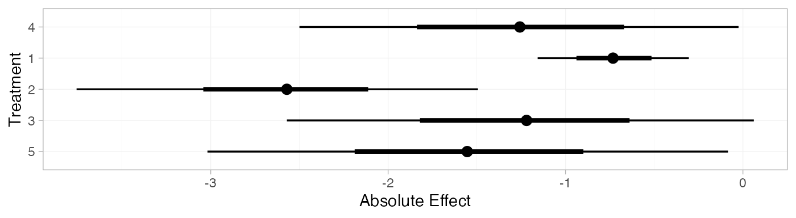
If the baseline argument is omitted, predictions of mean
off-time reduction will be produced for every study in the network based
on their estimated baseline response \(\mu_j\):
arm_pred_FE_studies <- predict(arm_fit_FE, type = "response")
arm_pred_FE_studies
#> ---------------------------------------------------------------------- Study: 1 ----
#>
#> mean sd 2.5% 25% 50% 75% 97.5% Bulk_ESS Tail_ESS Rhat
#> pred[1: 4] -1.65 0.46 -2.57 -1.97 -1.65 -1.34 -0.76 1967 2359 1
#> pred[1: 1] -1.12 0.43 -1.96 -1.41 -1.12 -0.82 -0.29 3358 3179 1
#> pred[1: 2] -2.93 0.52 -3.98 -3.28 -2.93 -2.58 -1.94 3558 3007 1
#> pred[1: 3] -1.60 0.39 -2.36 -1.87 -1.60 -1.35 -0.85 3563 3476 1
#> pred[1: 5] -1.95 0.50 -2.95 -2.30 -1.95 -1.61 -0.97 2112 2518 1
#>
#> ---------------------------------------------------------------------- Study: 2 ----
#>
#> mean sd 2.5% 25% 50% 75% 97.5% Bulk_ESS Tail_ESS Rhat
#> pred[2: 4] -1.18 0.52 -2.19 -1.51 -1.18 -0.83 -0.19 1403 2042 1
#> pred[2: 1] -0.64 0.26 -1.16 -0.82 -0.64 -0.46 -0.11 5099 3542 1
#> pred[2: 2] -2.45 0.24 -2.93 -2.62 -2.45 -2.29 -1.99 4938 3308 1
#> pred[2: 3] -1.13 0.53 -2.19 -1.48 -1.13 -0.76 -0.10 2020 2243 1
#> pred[2: 5] -1.48 0.56 -2.56 -1.85 -1.48 -1.10 -0.38 1549 2294 1
#>
#> ---------------------------------------------------------------------- Study: 3 ----
#>
#> mean sd 2.5% 25% 50% 75% 97.5% Bulk_ESS Tail_ESS Rhat
#> pred[3: 4] -1.12 0.43 -1.96 -1.40 -1.13 -0.84 -0.30 1896 2287 1
#> pred[3: 1] -0.59 0.36 -1.30 -0.83 -0.58 -0.34 0.10 4295 2625 1
#> pred[3: 2] -2.40 0.39 -3.18 -2.66 -2.41 -2.14 -1.66 4336 2898 1
#> pred[3: 3] -1.07 0.48 -2.00 -1.39 -1.08 -0.75 -0.14 2678 2607 1
#> pred[3: 5] -1.42 0.48 -2.36 -1.74 -1.42 -1.12 -0.49 2069 2750 1
#>
#> ---------------------------------------------------------------------- Study: 4 ----
#>
#> mean sd 2.5% 25% 50% 75% 97.5% Bulk_ESS Tail_ESS Rhat
#> pred[4: 4] -0.40 0.30 -0.97 -0.61 -0.40 -0.20 0.18 2383 2650 1
#> pred[4: 1] 0.14 0.51 -0.84 -0.20 0.13 0.48 1.12 1909 2492 1
#> pred[4: 2] -1.68 0.56 -2.78 -2.05 -1.68 -1.31 -0.59 2009 2493 1
#> pred[4: 3] -0.35 0.24 -0.83 -0.51 -0.35 -0.18 0.11 5241 3305 1
#> pred[4: 5] -0.70 0.37 -1.43 -0.94 -0.71 -0.45 0.01 2615 2737 1
#>
#> ---------------------------------------------------------------------- Study: 5 ----
#>
#> mean sd 2.5% 25% 50% 75% 97.5% Bulk_ESS Tail_ESS Rhat
#> pred[5: 4] -0.57 0.35 -1.25 -0.80 -0.56 -0.33 0.12 2455 2826 1
#> pred[5: 1] -0.03 0.53 -1.05 -0.38 -0.04 0.33 1.04 2141 2659 1
#> pred[5: 2] -1.84 0.58 -2.95 -2.24 -1.85 -1.45 -0.70 2219 2457 1
#> pred[5: 3] -0.52 0.30 -1.11 -0.71 -0.52 -0.32 0.09 5196 3264 1
#> pred[5: 5] -0.87 0.41 -1.68 -1.14 -0.86 -0.59 -0.09 2708 3075 1
#>
#> ---------------------------------------------------------------------- Study: 6 ----
#>
#> mean sd 2.5% 25% 50% 75% 97.5% Bulk_ESS Tail_ESS Rhat
#> pred[6: 4] -2.20 0.18 -2.54 -2.32 -2.20 -2.08 -1.85 2978 3062 1
#> pred[6: 1] -1.66 0.52 -2.66 -2.01 -1.66 -1.31 -0.66 1536 2365 1
#> pred[6: 2] -3.48 0.56 -4.55 -3.86 -3.47 -3.09 -2.43 1652 2716 1
#> pred[6: 3] -2.15 0.37 -2.89 -2.40 -2.15 -1.90 -1.43 2192 2486 1
#> pred[6: 5] -2.50 0.17 -2.84 -2.62 -2.50 -2.38 -2.17 5107 2797 1
#>
#> ---------------------------------------------------------------------- Study: 7 ----
#>
#> mean sd 2.5% 25% 50% 75% 97.5% Bulk_ESS Tail_ESS Rhat
#> pred[7: 4] -1.80 0.18 -2.15 -1.92 -1.80 -1.68 -1.46 3338 2985 1
#> pred[7: 1] -1.26 0.51 -2.25 -1.60 -1.26 -0.92 -0.25 1542 2379 1
#> pred[7: 2] -3.08 0.55 -4.14 -3.46 -3.07 -2.69 -2.03 1657 2473 1
#> pred[7: 3] -1.75 0.37 -2.47 -2.00 -1.75 -1.49 -1.02 2156 2604 1
#> pred[7: 5] -2.10 0.20 -2.49 -2.23 -2.10 -1.96 -1.71 4689 3469 1
plot(arm_pred_FE_studies)
We can also produce treatment rankings, rank probabilities, and cumulative rank probabilities.
(arm_ranks <- posterior_ranks(arm_fit_FE))
#> mean sd 2.5% 25% 50% 75% 97.5% Bulk_ESS Tail_ESS Rhat
#> rank[4] 3.49 0.70 2 3 3 4 5 2073 NA 1
#> rank[1] 4.65 0.76 2 5 5 5 5 2172 NA 1
#> rank[2] 1.05 0.28 1 1 1 1 2 2948 3006 1
#> rank[3] 3.53 0.92 2 3 4 4 5 2867 NA 1
#> rank[5] 2.27 0.66 1 2 2 2 4 2558 2626 1
plot(arm_ranks)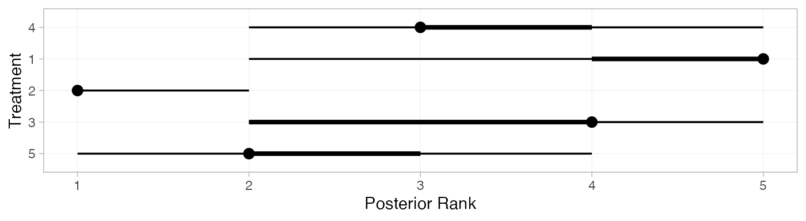
(arm_rankprobs <- posterior_rank_probs(arm_fit_FE))
#> p_rank[1] p_rank[2] p_rank[3] p_rank[4] p_rank[5]
#> d[4] 0.00 0.04 0.51 0.37 0.08
#> d[1] 0.00 0.04 0.06 0.12 0.79
#> d[2] 0.96 0.04 0.01 0.00 0.00
#> d[3] 0.00 0.16 0.25 0.46 0.12
#> d[5] 0.04 0.72 0.18 0.05 0.01
plot(arm_rankprobs)
(arm_cumrankprobs <- posterior_rank_probs(arm_fit_FE, cumulative = TRUE))
#> p_rank[1] p_rank[2] p_rank[3] p_rank[4] p_rank[5]
#> d[4] 0.00 0.04 0.55 0.92 1
#> d[1] 0.00 0.04 0.10 0.21 1
#> d[2] 0.96 0.99 1.00 1.00 1
#> d[3] 0.00 0.17 0.42 0.88 1
#> d[5] 0.04 0.76 0.94 0.99 1
plot(arm_cumrankprobs)Analysis of contrast-based data
We now perform an analysis using the contrast-based data (mean differences and standard errors).
Setting up the network
With contrast-level data giving the mean difference in off-time
reduction (diff) and standard error (se_diff),
we use the function set_agd_contrast() to set up the
network.
contr_net <- set_agd_contrast(parkinsons,
study = studyn,
trt = trtn,
y = diff,
se = se_diff,
sample_size = n)
contr_net
#> A network with 7 AgD studies (contrast-based).
#>
#> -------------------------------------------------- AgD studies (contrast-based) ----
#> Study Treatment arms
#> 1 2: 1 | 3
#> 2 2: 1 | 2
#> 3 3: 4 | 1 | 2
#> 4 2: 4 | 3
#> 5 2: 4 | 3
#> 6 2: 4 | 5
#> 7 2: 4 | 5
#>
#> Outcome type: continuous
#> ------------------------------------------------------------------------------------
#> Total number of treatments: 5
#> Total number of studies: 7
#> Reference treatment is: 4
#> Network is connectedThe sample_size argument is optional, but enables the
nodes to be weighted by sample size in the network plot.
Plot the network structure.
plot(contr_net, weight_edges = TRUE, weight_nodes = TRUE)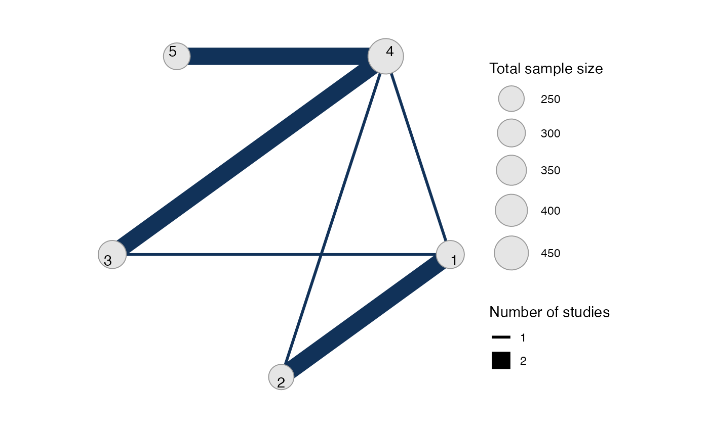
Meta-analysis models
We fit both fixed effect (FE) and random effects (RE) models.
Fixed effect meta-analysis
First, we fit a fixed effect model using the nma()
function with trt_effects = "fixed". We use \(\mathrm{N}(0, 100^2)\) prior distributions
for the treatment effects \(d_k\). We
can examine the range of parameter values implied by these prior
distributions with the summary() method:
summary(normal(scale = 100))
#> A Normal prior distribution: location = 0, scale = 100.
#> 50% of the prior density lies between -67.45 and 67.45.
#> 95% of the prior density lies between -196 and 196.The model is fitted using the nma() function.
contr_fit_FE <- nma(contr_net,
trt_effects = "fixed",
prior_trt = normal(scale = 100))
#> Note: Setting "4" as the network reference treatment.Basic parameter summaries are given by the print()
method:
contr_fit_FE
#> A fixed effects NMA with a normal likelihood (identity link).
#> Inference for Stan model: normal.
#> 4 chains, each with iter=2000; warmup=1000; thin=1;
#> post-warmup draws per chain=1000, total post-warmup draws=4000.
#>
#> mean se_mean sd 2.5% 25% 50% 75% 97.5% n_eff Rhat
#> d[1] 0.54 0.01 0.48 -0.40 0.21 0.54 0.85 1.48 2216 1
#> d[2] -1.27 0.01 0.52 -2.30 -1.61 -1.27 -0.93 -0.25 2325 1
#> d[3] 0.07 0.01 0.33 -0.58 -0.16 0.06 0.29 0.74 3070 1
#> d[5] -0.30 0.00 0.21 -0.71 -0.44 -0.30 -0.16 0.12 3359 1
#> lp__ -3.16 0.03 1.46 -6.87 -3.86 -2.82 -2.09 -1.38 1762 1
#>
#> Samples were drawn using NUTS(diag_e) at Wed Aug 30 11:02:25 2023.
#> For each parameter, n_eff is a crude measure of effective sample size,
#> and Rhat is the potential scale reduction factor on split chains (at
#> convergence, Rhat=1).The prior and posterior distributions can be compared visually using
the plot_prior_posterior() function:
plot_prior_posterior(contr_fit_FE)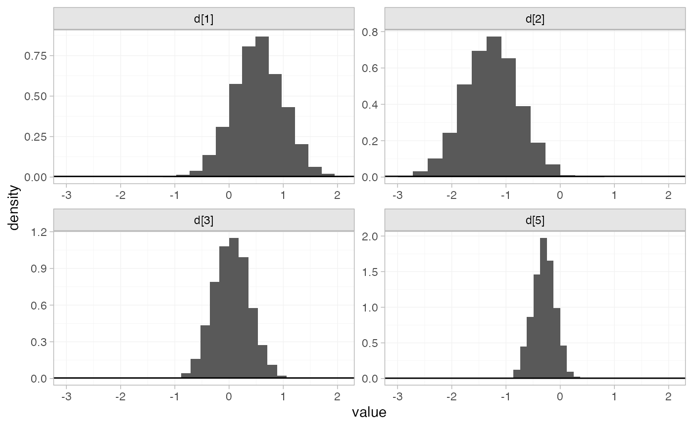
Random effects meta-analysis
We now fit a random effects model using the nma()
function with trt_effects = "random". Again, we use \(\mathrm{N}(0, 100^2)\) prior distributions
for the treatment effects \(d_k\), and
we additionally use a \(\textrm{half-N}(5^2)\) prior for the
heterogeneity standard deviation \(\tau\). We can examine the range of
parameter values implied by these prior distributions with the
summary() method:
summary(normal(scale = 100))
#> A Normal prior distribution: location = 0, scale = 100.
#> 50% of the prior density lies between -67.45 and 67.45.
#> 95% of the prior density lies between -196 and 196.
summary(half_normal(scale = 5))
#> A half-Normal prior distribution: location = 0, scale = 5.
#> 50% of the prior density lies between 0 and 3.37.
#> 95% of the prior density lies between 0 and 9.8.Fitting the RE model
contr_fit_RE <- nma(contr_net,
seed = 1150676438,
trt_effects = "random",
prior_trt = normal(scale = 100),
prior_het = half_normal(scale = 5),
adapt_delta = 0.99)
#> Note: Setting "4" as the network reference treatment.
#> Warning: There were 1 divergent transitions after warmup. See
#> https://mc-stan.org/misc/warnings.html#divergent-transitions-after-warmup
#> to find out why this is a problem and how to eliminate them.
#> Warning: Examine the pairs() plot to diagnose sampling problemsWe do see a small number of divergent transition errors, which cannot
simply be removed by increasing the value of the
adapt_delta argument (by default set to 0.95
for RE models). To diagnose, we use the pairs() method to
investigate where in the posterior distribution these divergences are
happening (indicated by red crosses):

The divergent transitions occur in the upper tail of the heterogeneity standard deviation. In this case, with only a small number of studies, there is not very much information to estimate the heterogeneity standard deviation and the prior distribution may be too heavy-tailed. We could consider a more informative prior distribution for the heterogeneity variance to aid estimation.
Basic parameter summaries are given by the print()
method:
contr_fit_RE
#> A random effects NMA with a normal likelihood (identity link).
#> Inference for Stan model: normal.
#> 4 chains, each with iter=2000; warmup=1000; thin=1;
#> post-warmup draws per chain=1000, total post-warmup draws=4000.
#>
#> mean se_mean sd 2.5% 25% 50% 75% 97.5% n_eff Rhat
#> d[1] 0.51 0.01 0.61 -0.69 0.13 0.50 0.89 1.71 2022 1
#> d[2] -1.33 0.01 0.68 -2.74 -1.74 -1.34 -0.90 -0.04 2369 1
#> d[3] 0.04 0.01 0.45 -0.86 -0.24 0.04 0.31 0.90 2730 1
#> d[5] -0.31 0.01 0.39 -1.09 -0.51 -0.31 -0.10 0.51 1861 1
#> lp__ -8.38 0.08 2.83 -14.87 -10.07 -8.13 -6.32 -3.71 1338 1
#> tau 0.37 0.01 0.38 0.01 0.12 0.27 0.50 1.29 982 1
#>
#> Samples were drawn using NUTS(diag_e) at Wed Aug 30 11:02:32 2023.
#> For each parameter, n_eff is a crude measure of effective sample size,
#> and Rhat is the potential scale reduction factor on split chains (at
#> convergence, Rhat=1).By default, summaries of the study-specific relative effects \(\delta_{jk}\) are hidden, but could be
examined by changing the pars argument:
The prior and posterior distributions can be compared visually using
the plot_prior_posterior() function:
plot_prior_posterior(contr_fit_RE)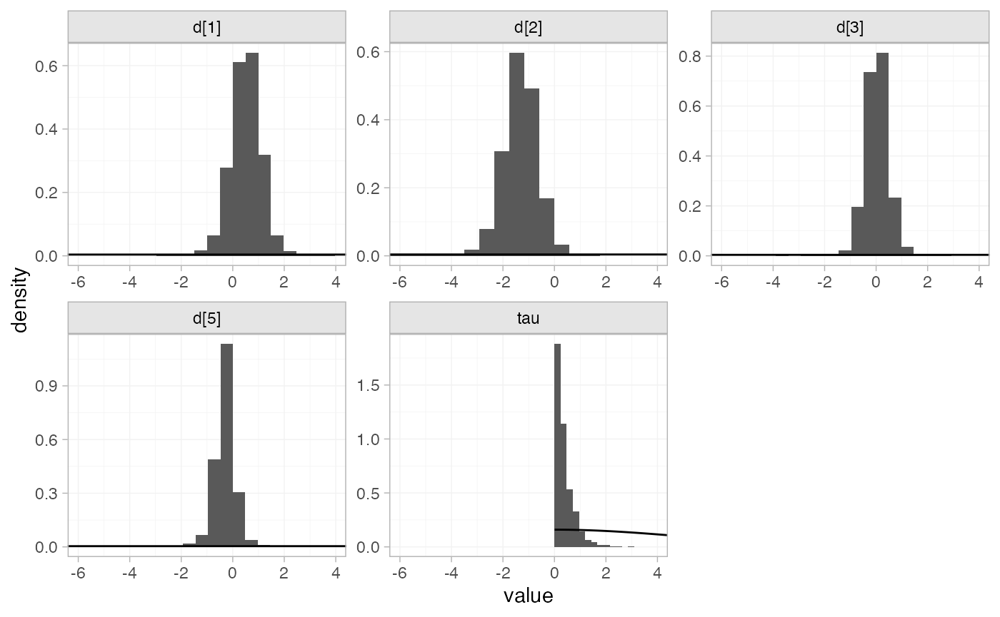
Model comparison
Model fit can be checked using the dic() function:
(contr_dic_FE <- dic(contr_fit_FE))
#> Residual deviance: 6.3 (on 8 data points)
#> pD: 4
#> DIC: 10.4
(contr_dic_RE <- dic(contr_fit_RE))
#> Residual deviance: 6.7 (on 8 data points)
#> pD: 5.5
#> DIC: 12.1Both models fit the data well, having posterior mean residual deviance close to the number of data points. The DIC is similar between models, so we choose the FE model based on parsimony.
We can also examine the residual deviance contributions with the
corresponding plot() method.
plot(contr_dic_FE)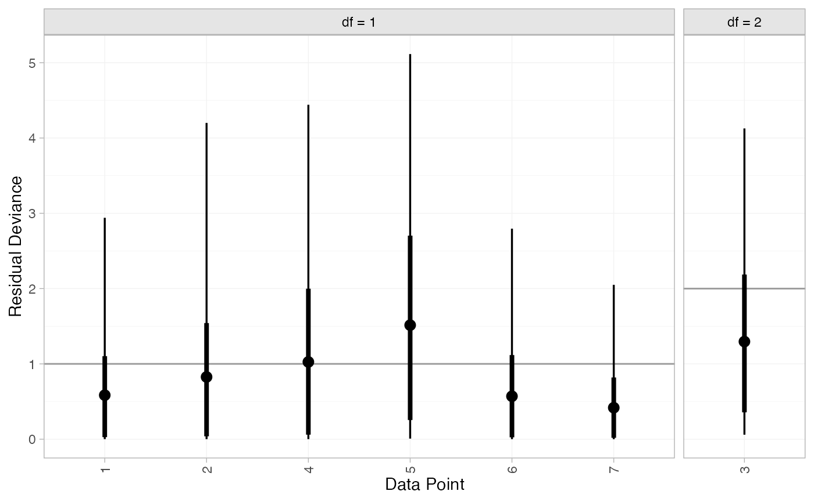
plot(contr_dic_RE)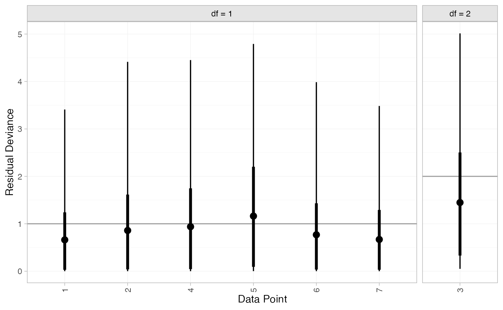
Further results
For comparison with Dias et al. (2011), we can produce
relative effects against placebo using the
relative_effects() function with
trt_ref = 1:
(contr_releff_FE <- relative_effects(contr_fit_FE, trt_ref = 1))
#> mean sd 2.5% 25% 50% 75% 97.5% Bulk_ESS Tail_ESS Rhat
#> d[4] -0.54 0.48 -1.48 -0.85 -0.54 -0.21 0.40 2233 2368 1
#> d[2] -1.80 0.33 -2.45 -2.03 -1.80 -1.59 -1.16 5522 3140 1
#> d[3] -0.47 0.47 -1.42 -0.78 -0.47 -0.16 0.45 3080 3086 1
#> d[5] -0.84 0.52 -1.88 -1.18 -0.84 -0.49 0.17 2381 2347 1
plot(contr_releff_FE, ref_line = 0)
(contr_releff_RE <- relative_effects(contr_fit_RE, trt_ref = 1))
#> mean sd 2.5% 25% 50% 75% 97.5% Bulk_ESS Tail_ESS Rhat
#> d[4] -0.51 0.61 -1.71 -0.89 -0.50 -0.13 0.69 2200 1943 1
#> d[2] -1.84 0.49 -2.81 -2.12 -1.83 -1.55 -0.90 3668 2552 1
#> d[3] -0.47 0.64 -1.73 -0.86 -0.48 -0.08 0.80 3062 2332 1
#> d[5] -0.82 0.74 -2.25 -1.27 -0.82 -0.38 0.63 1967 1595 1
plot(contr_releff_RE, ref_line = 0)Following Dias et al. (2011), we produce absolute predictions
of the mean off-time reduction on each treatment assuming a Normal
distribution for the outcomes on treatment 1 (placebo) with mean \(-0.73\) and precision \(21\). We use the predict()
method, where the baseline argument takes a
distr() distribution object with which we specify the
corresponding Normal distribution, and we specify
trt_ref = 1 to indicate that the baseline distribution
corresponds to treatment 1. (Strictly speaking,
type = "response" is unnecessary here, since the identity
link function was used.)
contr_pred_FE <- predict(contr_fit_FE,
baseline = distr(qnorm, mean = -0.73, sd = 21^-0.5),
type = "response",
trt_ref = 1)
contr_pred_FE
#> mean sd 2.5% 25% 50% 75% 97.5% Bulk_ESS Tail_ESS Rhat
#> pred[4] -1.27 0.52 -2.31 -1.61 -1.27 -0.92 -0.24 2393 2512 1
#> pred[1] -0.73 0.22 -1.16 -0.88 -0.73 -0.58 -0.30 3988 3629 1
#> pred[2] -2.53 0.39 -3.33 -2.80 -2.53 -2.27 -1.77 4851 3791 1
#> pred[3] -1.20 0.52 -2.23 -1.56 -1.20 -0.84 -0.18 3333 3328 1
#> pred[5] -1.57 0.56 -2.69 -1.94 -1.57 -1.19 -0.51 2506 2533 1
plot(contr_pred_FE)
contr_pred_RE <- predict(contr_fit_RE,
baseline = distr(qnorm, mean = -0.73, sd = 21^-0.5),
type = "response",
trt_ref = 1)
contr_pred_RE
#> mean sd 2.5% 25% 50% 75% 97.5% Bulk_ESS Tail_ESS Rhat
#> pred[4] -1.24 0.65 -2.49 -1.65 -1.23 -0.85 0.06 2175 1866 1
#> pred[1] -0.73 0.22 -1.16 -0.88 -0.73 -0.59 -0.31 3715 3592 1
#> pred[2] -2.57 0.54 -3.67 -2.89 -2.57 -2.24 -1.52 3848 2953 1
#> pred[3] -1.21 0.68 -2.48 -1.63 -1.21 -0.79 0.10 2974 2324 1
#> pred[5] -1.55 0.77 -3.00 -2.03 -1.55 -1.08 -0.05 1929 1677 1
plot(contr_pred_RE)If the baseline argument is omitted an error will be
raised, as there are no study baselines estimated in this network.
# Not run
predict(contr_fit_FE, type = "response")We can also produce treatment rankings, rank probabilities, and cumulative rank probabilities.
(contr_ranks <- posterior_ranks(contr_fit_FE))
#> mean sd 2.5% 25% 50% 75% 97.5% Bulk_ESS Tail_ESS Rhat
#> rank[4] 3.47 0.72 2 3 3 4 5 2606 NA 1
#> rank[1] 4.65 0.75 2 5 5 5 5 2701 NA 1
#> rank[2] 1.06 0.30 1 1 1 1 2 2204 2244 1
#> rank[3] 3.55 0.91 2 3 4 4 5 3781 NA 1
#> rank[5] 2.27 0.66 1 2 2 2 4 2718 2809 1
plot(contr_ranks)
(contr_rankprobs <- posterior_rank_probs(contr_fit_FE))
#> p_rank[1] p_rank[2] p_rank[3] p_rank[4] p_rank[5]
#> d[4] 0.00 0.05 0.51 0.36 0.08
#> d[1] 0.00 0.04 0.06 0.12 0.79
#> d[2] 0.96 0.03 0.01 0.00 0.00
#> d[3] 0.00 0.16 0.25 0.47 0.12
#> d[5] 0.04 0.72 0.17 0.06 0.01
plot(contr_rankprobs)
(contr_cumrankprobs <- posterior_rank_probs(contr_fit_FE, cumulative = TRUE))
#> p_rank[1] p_rank[2] p_rank[3] p_rank[4] p_rank[5]
#> d[4] 0.00 0.05 0.56 0.92 1
#> d[1] 0.00 0.04 0.10 0.21 1
#> d[2] 0.96 0.99 1.00 1.00 1
#> d[3] 0.00 0.16 0.41 0.88 1
#> d[5] 0.04 0.76 0.94 0.99 1
plot(contr_cumrankprobs)Analysis of mixed arm-based and contrast-based data
We now perform an analysis where some studies contribute arm-based data, and other contribute contrast-based data. Replicating Dias et al. (2011), we consider arm-based data from studies 1-3, and contrast-based data from studies 4-7.
studies <- parkinsons$studyn
(parkinsons_arm <- parkinsons[studies %in% 1:3, ])
#> studyn trtn y se n diff se_diff
#> 1 1 1 -1.22 0.504 54 NA 0.504
#> 2 1 3 -1.53 0.439 95 -0.31 0.668
#> 3 2 1 -0.70 0.282 172 NA 0.282
#> 4 2 2 -2.40 0.258 173 -1.70 0.382
#> 5 3 1 -0.30 0.505 76 NA 0.505
#> 6 3 2 -2.60 0.510 71 -2.30 0.718
#> 7 3 4 -1.20 0.478 81 -0.90 0.695
(parkinsons_contr <- parkinsons[studies %in% 4:7, ])
#> studyn trtn y se n diff se_diff
#> 8 4 3 -0.24 0.265 128 NA 0.265
#> 9 4 4 -0.59 0.354 72 -0.35 0.442
#> 10 5 3 -0.73 0.335 80 NA 0.335
#> 11 5 4 -0.18 0.442 46 0.55 0.555
#> 12 6 4 -2.20 0.197 137 NA 0.197
#> 13 6 5 -2.50 0.190 131 -0.30 0.274
#> 14 7 4 -1.80 0.200 154 NA 0.200
#> 15 7 5 -2.10 0.250 143 -0.30 0.320Setting up the network
We use the functions set_agd_arm() and
set_agd_contrast() to set up the respective data sources
within the network, and then combine together with
combine_network().
mix_arm_net <- set_agd_arm(parkinsons_arm,
study = studyn,
trt = trtn,
y = y,
se = se,
sample_size = n)
mix_contr_net <- set_agd_contrast(parkinsons_contr,
study = studyn,
trt = trtn,
y = diff,
se = se_diff,
sample_size = n)
mix_net <- combine_network(mix_arm_net, mix_contr_net)
mix_net
#> A network with 3 AgD studies (arm-based), and 4 AgD studies (contrast-based).
#>
#> ------------------------------------------------------- AgD studies (arm-based) ----
#> Study Treatment arms
#> 1 2: 1 | 3
#> 2 2: 1 | 2
#> 3 3: 4 | 1 | 2
#>
#> Outcome type: continuous
#> -------------------------------------------------- AgD studies (contrast-based) ----
#> Study Treatment arms
#> 4 2: 4 | 3
#> 5 2: 4 | 3
#> 6 2: 4 | 5
#> 7 2: 4 | 5
#>
#> Outcome type: continuous
#> ------------------------------------------------------------------------------------
#> Total number of treatments: 5
#> Total number of studies: 7
#> Reference treatment is: 4
#> Network is connectedThe sample_size argument is optional, but enables the
nodes to be weighted by sample size in the network plot.
Plot the network structure.
plot(mix_net, weight_edges = TRUE, weight_nodes = TRUE)
Meta-analysis models
We fit both fixed effect (FE) and random effects (RE) models.
Fixed effect meta-analysis
First, we fit a fixed effect model using the nma()
function with trt_effects = "fixed". We use \(\mathrm{N}(0, 100^2)\) prior distributions
for the treatment effects \(d_k\) and
study-specific intercepts \(\mu_j\). We
can examine the range of parameter values implied by these prior
distributions with the summary() method:
summary(normal(scale = 100))
#> A Normal prior distribution: location = 0, scale = 100.
#> 50% of the prior density lies between -67.45 and 67.45.
#> 95% of the prior density lies between -196 and 196.The model is fitted using the nma() function.
mix_fit_FE <- nma(mix_net,
trt_effects = "fixed",
prior_intercept = normal(scale = 100),
prior_trt = normal(scale = 100))
#> Note: Setting "4" as the network reference treatment.Basic parameter summaries are given by the print()
method:
mix_fit_FE
#> A fixed effects NMA with a normal likelihood (identity link).
#> Inference for Stan model: normal.
#> 4 chains, each with iter=2000; warmup=1000; thin=1;
#> post-warmup draws per chain=1000, total post-warmup draws=4000.
#>
#> mean se_mean sd 2.5% 25% 50% 75% 97.5% n_eff Rhat
#> d[1] 0.52 0.01 0.47 -0.40 0.20 0.52 0.84 1.43 1517 1
#> d[2] -1.29 0.01 0.51 -2.32 -1.62 -1.29 -0.96 -0.29 1641 1
#> d[3] 0.05 0.01 0.32 -0.58 -0.16 0.04 0.26 0.67 2753 1
#> d[5] -0.30 0.00 0.20 -0.71 -0.44 -0.30 -0.16 0.10 2836 1
#> lp__ -4.61 0.04 1.87 -9.22 -5.57 -4.28 -3.26 -2.00 1833 1
#>
#> Samples were drawn using NUTS(diag_e) at Wed Aug 30 11:02:46 2023.
#> For each parameter, n_eff is a crude measure of effective sample size,
#> and Rhat is the potential scale reduction factor on split chains (at
#> convergence, Rhat=1).By default, summaries of the study-specific intercepts \(\mu_j\) are hidden, but could be examined
by changing the pars argument:
The prior and posterior distributions can be compared visually using
the plot_prior_posterior() function:
plot_prior_posterior(mix_fit_FE)Random effects meta-analysis
We now fit a random effects model using the nma()
function with trt_effects = "random". Again, we use \(\mathrm{N}(0, 100^2)\) prior distributions
for the treatment effects \(d_k\) and
study-specific intercepts \(\mu_j\),
and we additionally use a \(\textrm{half-N}(5^2)\) prior for the
heterogeneity standard deviation \(\tau\). We can examine the range of
parameter values implied by these prior distributions with the
summary() method:
summary(normal(scale = 100))
#> A Normal prior distribution: location = 0, scale = 100.
#> 50% of the prior density lies between -67.45 and 67.45.
#> 95% of the prior density lies between -196 and 196.
summary(half_normal(scale = 5))
#> A half-Normal prior distribution: location = 0, scale = 5.
#> 50% of the prior density lies between 0 and 3.37.
#> 95% of the prior density lies between 0 and 9.8.Fitting the RE model
mix_fit_RE <- nma(mix_net,
seed = 437219664,
trt_effects = "random",
prior_intercept = normal(scale = 100),
prior_trt = normal(scale = 100),
prior_het = half_normal(scale = 5),
adapt_delta = 0.99)
#> Note: Setting "4" as the network reference treatment.
#> Warning: There were 2 divergent transitions after warmup. See
#> https://mc-stan.org/misc/warnings.html#divergent-transitions-after-warmup
#> to find out why this is a problem and how to eliminate them.
#> Warning: There were 3 transitions after warmup that exceeded the maximum treedepth. Increase max_treedepth above 10. See
#> https://mc-stan.org/misc/warnings.html#maximum-treedepth-exceeded
#> Warning: Examine the pairs() plot to diagnose sampling problemsWe do see a small number of divergent transition errors, which cannot
simply be removed by increasing the value of the
adapt_delta argument (by default set to 0.95
for RE models). To diagnose, we use the pairs() method to
investigate where in the posterior distribution these divergences are
happening (indicated by red crosses):
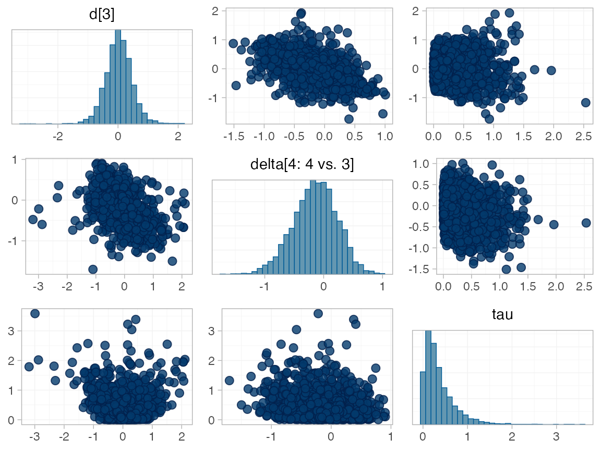
The divergent transitions occur in the upper tail of the heterogeneity standard deviation. In this case, with only a small number of studies, there is not very much information to estimate the heterogeneity standard deviation and the prior distribution may be too heavy-tailed. We could consider a more informative prior distribution for the heterogeneity variance to aid estimation.
Basic parameter summaries are given by the print()
method:
mix_fit_RE
#> A random effects NMA with a normal likelihood (identity link).
#> Inference for Stan model: normal.
#> 4 chains, each with iter=2000; warmup=1000; thin=1;
#> post-warmup draws per chain=1000, total post-warmup draws=4000.
#>
#> mean se_mean sd 2.5% 25% 50% 75% 97.5% n_eff Rhat
#> d[1] 0.51 0.02 0.66 -0.86 0.15 0.52 0.89 1.74 1629 1.00
#> d[2] -1.34 0.02 0.75 -2.90 -1.75 -1.32 -0.91 0.04 1537 1.00
#> d[3] 0.02 0.01 0.54 -1.05 -0.26 0.02 0.32 0.99 2249 1.00
#> d[5] -0.30 0.01 0.43 -1.21 -0.51 -0.30 -0.09 0.61 2295 1.00
#> lp__ -10.72 0.08 3.23 -17.78 -12.71 -10.44 -8.45 -5.15 1444 1.00
#> tau 0.42 0.02 0.46 0.01 0.13 0.28 0.54 1.67 533 1.01
#>
#> Samples were drawn using NUTS(diag_e) at Wed Aug 30 11:02:58 2023.
#> For each parameter, n_eff is a crude measure of effective sample size,
#> and Rhat is the potential scale reduction factor on split chains (at
#> convergence, Rhat=1).By default, summaries of the study-specific intercepts \(\mu_j\) and study-specific relative effects
\(\delta_{jk}\) are hidden, but could
be examined by changing the pars argument:
The prior and posterior distributions can be compared visually using
the plot_prior_posterior() function:
plot_prior_posterior(mix_fit_RE)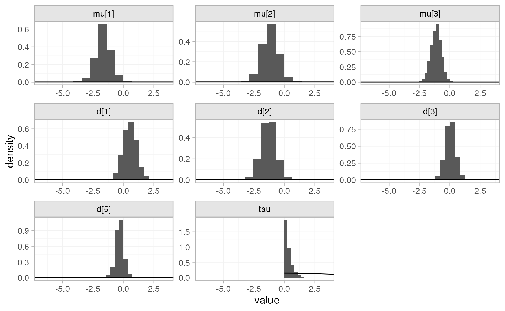
Model comparison
Model fit can be checked using the dic() function:
(mix_dic_FE <- dic(mix_fit_FE))
#> Residual deviance: 9.2 (on 11 data points)
#> pD: 6.9
#> DIC: 16.2
(mix_dic_RE <- dic(mix_fit_RE))
#> Residual deviance: 9.6 (on 11 data points)
#> pD: 8.5
#> DIC: 18.1Both models fit the data well, having posterior mean residual deviance close to the number of data points. The DIC is similar between models, so we choose the FE model based on parsimony.
We can also examine the residual deviance contributions with the
corresponding plot() method.
plot(mix_dic_FE)
plot(mix_dic_RE)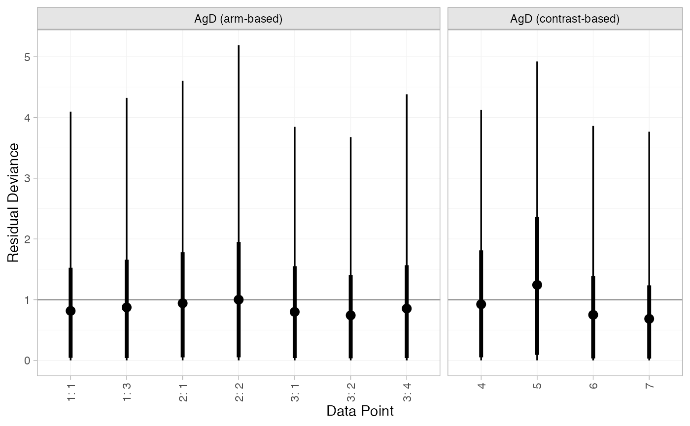
Further results
For comparison with Dias et al. (2011), we can produce
relative effects against placebo using the
relative_effects() function with
trt_ref = 1:
(mix_releff_FE <- relative_effects(mix_fit_FE, trt_ref = 1))
#> mean sd 2.5% 25% 50% 75% 97.5% Bulk_ESS Tail_ESS Rhat
#> d[4] -0.52 0.47 -1.43 -0.84 -0.52 -0.20 0.40 1542 2165 1
#> d[2] -1.81 0.33 -2.47 -2.03 -1.81 -1.59 -1.17 6740 3205 1
#> d[3] -0.47 0.49 -1.41 -0.81 -0.48 -0.14 0.48 2302 2692 1
#> d[5] -0.82 0.52 -1.81 -1.17 -0.82 -0.48 0.19 1755 2427 1
plot(mix_releff_FE, ref_line = 0)
(mix_releff_RE <- relative_effects(mix_fit_RE, trt_ref = 1))
#> mean sd 2.5% 25% 50% 75% 97.5% Bulk_ESS Tail_ESS Rhat
#> d[4] -0.51 0.66 -1.74 -0.89 -0.52 -0.15 0.86 1814 1594 1
#> d[2] -1.85 0.58 -2.96 -2.13 -1.85 -1.56 -0.84 4001 2109 1
#> d[3] -0.50 0.69 -1.82 -0.89 -0.50 -0.12 0.89 2965 2206 1
#> d[5] -0.81 0.79 -2.32 -1.27 -0.82 -0.38 0.82 1866 1679 1
plot(mix_releff_RE, ref_line = 0)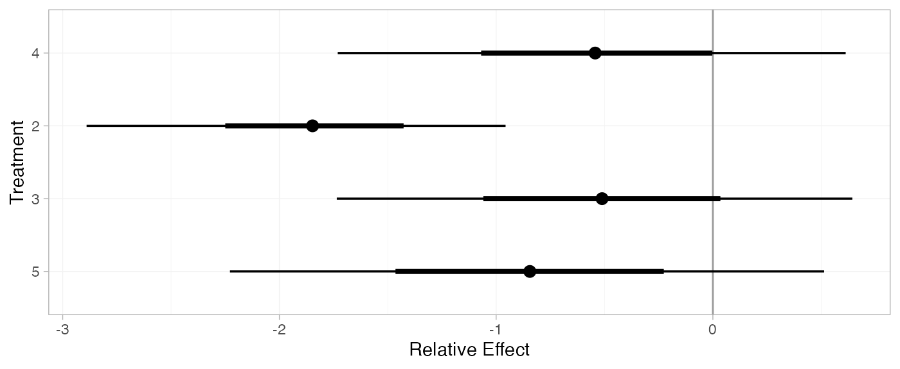
Following Dias et al. (2011), we produce absolute predictions
of the mean off-time reduction on each treatment assuming a Normal
distribution for the outcomes on treatment 1 (placebo) with mean \(-0.73\) and precision \(21\). We use the predict()
method, where the baseline argument takes a
distr() distribution object with which we specify the
corresponding Normal distribution, and we specify
trt_ref = 1 to indicate that the baseline distribution
corresponds to treatment 1. (Strictly speaking,
type = "response" is unnecessary here, since the identity
link function was used.)
mix_pred_FE <- predict(mix_fit_FE,
baseline = distr(qnorm, mean = -0.73, sd = 21^-0.5),
type = "response",
trt_ref = 1)
mix_pred_FE
#> mean sd 2.5% 25% 50% 75% 97.5% Bulk_ESS Tail_ESS Rhat
#> pred[4] -1.24 0.52 -2.24 -1.61 -1.25 -0.89 -0.22 1674 2447 1
#> pred[1] -0.72 0.22 -1.14 -0.87 -0.72 -0.58 -0.29 3556 3638 1
#> pred[2] -2.53 0.39 -3.31 -2.80 -2.53 -2.27 -1.73 4609 3417 1
#> pred[3] -1.19 0.53 -2.21 -1.57 -1.20 -0.83 -0.15 2345 2871 1
#> pred[5] -1.54 0.56 -2.65 -1.92 -1.57 -1.15 -0.46 1866 2434 1
plot(mix_pred_FE)
mix_pred_RE <- predict(mix_fit_RE,
baseline = distr(qnorm, mean = -0.73, sd = 21^-0.5),
type = "response",
trt_ref = 1)
mix_pred_RE
#> mean sd 2.5% 25% 50% 75% 97.5% Bulk_ESS Tail_ESS Rhat
#> pred[4] -1.24 0.69 -2.54 -1.66 -1.25 -0.85 0.17 1920 1707 1
#> pred[1] -0.73 0.22 -1.17 -0.88 -0.73 -0.58 -0.31 4051 3817 1
#> pred[2] -2.58 0.62 -3.75 -2.91 -2.57 -2.24 -1.52 3816 2164 1
#> pred[3] -1.22 0.73 -2.60 -1.65 -1.22 -0.82 0.18 3082 2578 1
#> pred[5] -1.54 0.82 -3.08 -2.03 -1.56 -1.07 0.09 1963 1709 1
plot(mix_pred_RE)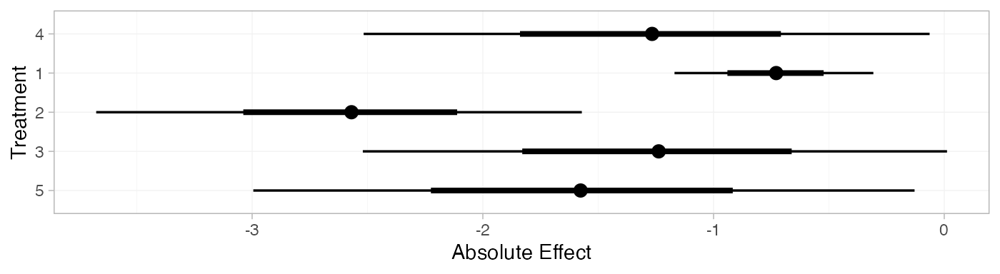
If the baseline argument is omitted, predictions of mean
off-time reduction will be produced for every arm-based study
in the network based on their estimated baseline response \(\mu_j\):
mix_pred_FE_studies <- predict(mix_fit_FE, type = "response")
mix_pred_FE_studies
#> ---------------------------------------------------------------------- Study: 1 ----
#>
#> mean sd 2.5% 25% 50% 75% 97.5% Bulk_ESS Tail_ESS Rhat
#> pred[1: 4] -1.64 0.45 -2.53 -1.95 -1.64 -1.34 -0.75 2293 2590 1
#> pred[1: 1] -1.12 0.43 -1.98 -1.41 -1.12 -0.84 -0.27 3653 3131 1
#> pred[1: 2] -2.93 0.52 -3.94 -3.29 -2.93 -2.58 -1.91 3566 2944 1
#> pred[1: 3] -1.60 0.40 -2.38 -1.87 -1.59 -1.34 -0.81 3534 2565 1
#> pred[1: 5] -1.94 0.49 -2.91 -2.27 -1.95 -1.61 -0.96 2424 2445 1
#>
#> ---------------------------------------------------------------------- Study: 2 ----
#>
#> mean sd 2.5% 25% 50% 75% 97.5% Bulk_ESS Tail_ESS Rhat
#> pred[2: 4] -1.16 0.50 -2.13 -1.50 -1.17 -0.83 -0.15 1495 2084 1
#> pred[2: 1] -0.64 0.26 -1.14 -0.82 -0.64 -0.47 -0.11 5710 3476 1
#> pred[2: 2] -2.45 0.24 -2.91 -2.61 -2.45 -2.29 -1.97 5095 3528 1
#> pred[2: 3] -1.11 0.53 -2.13 -1.47 -1.12 -0.76 -0.08 2107 2349 1
#> pred[2: 5] -1.46 0.54 -2.53 -1.83 -1.46 -1.09 -0.39 1693 2292 1
#>
#> ---------------------------------------------------------------------- Study: 3 ----
#>
#> mean sd 2.5% 25% 50% 75% 97.5% Bulk_ESS Tail_ESS Rhat
#> pred[3: 4] -1.11 0.41 -1.89 -1.38 -1.12 -0.85 -0.27 1920 2608 1
#> pred[3: 1] -0.59 0.37 -1.32 -0.84 -0.58 -0.34 0.11 4354 3105 1
#> pred[3: 2] -2.40 0.38 -3.16 -2.65 -2.41 -2.15 -1.63 4350 3240 1
#> pred[3: 3] -1.07 0.47 -1.98 -1.38 -1.07 -0.75 -0.15 2796 2796 1
#> pred[3: 5] -1.41 0.46 -2.29 -1.72 -1.42 -1.11 -0.50 2130 2646 1
plot(mix_pred_FE_studies)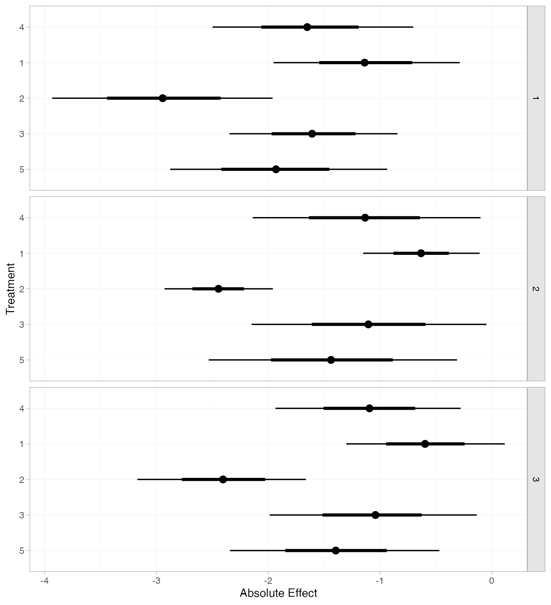
We can also produce treatment rankings, rank probabilities, and cumulative rank probabilities.
(mix_ranks <- posterior_ranks(mix_fit_FE))
#> mean sd 2.5% 25% 50% 75% 97.5% Bulk_ESS Tail_ESS Rhat
#> rank[4] 3.50 0.71 2 3 3 4 5 2062 NA 1
#> rank[1] 4.63 0.78 2 5 5 5 5 1963 NA 1
#> rank[2] 1.05 0.26 1 1 1 1 2 2608 2767 1
#> rank[3] 3.54 0.92 2 3 4 4 5 3151 NA 1
#> rank[5] 2.28 0.66 1 2 2 2 4 2615 2603 1
plot(mix_ranks)
(mix_rankprobs <- posterior_rank_probs(mix_fit_FE))
#> p_rank[1] p_rank[2] p_rank[3] p_rank[4] p_rank[5]
#> d[4] 0.00 0.04 0.49 0.38 0.08
#> d[1] 0.00 0.04 0.06 0.12 0.78
#> d[2] 0.96 0.03 0.01 0.00 0.00
#> d[3] 0.00 0.16 0.25 0.45 0.13
#> d[5] 0.04 0.72 0.19 0.05 0.01
plot(mix_rankprobs)
(mix_cumrankprobs <- posterior_rank_probs(mix_fit_FE, cumulative = TRUE))
#> p_rank[1] p_rank[2] p_rank[3] p_rank[4] p_rank[5]
#> d[4] 0.00 0.04 0.54 0.92 1
#> d[1] 0.00 0.04 0.10 0.22 1
#> d[2] 0.96 0.99 1.00 1.00 1
#> d[3] 0.00 0.17 0.42 0.87 1
#> d[5] 0.04 0.75 0.94 0.99 1
plot(mix_cumrankprobs)